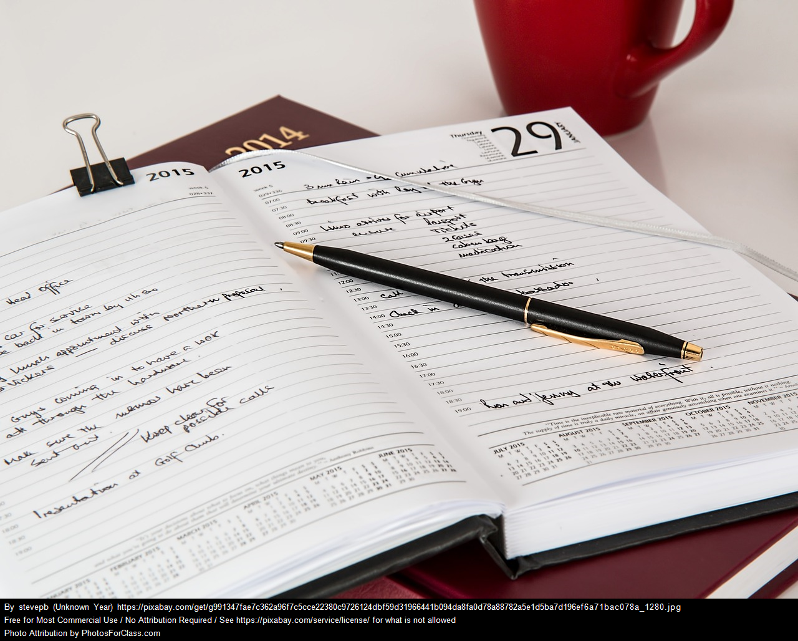

Teamwork
Throughout both my work experiences and school experiences I have the opportunity to work with different teams. This has equipped me to have an open mind toward new ideas and to work better with diverse groups of people.
Communication
Throughout all of my experiences, both personal and professional, I have had to comunicate with others. With the help of my previous jobs, I have become equipped to communicate effectively via phone, email, and letter.

Organization
With both classes and my job I have to stay organized to meet deadlines. My current job has helped equip me to stay organized through calendars, reminders, and spreadsheets.